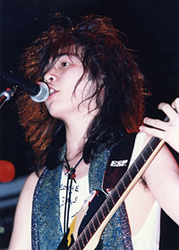
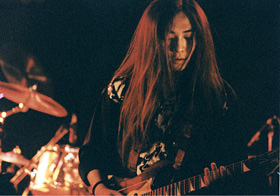

学生時代は、どのように過ごされたのでしょうか？
大学にも行ってらしたようですが、何を専攻されてたのでしょうか？

高校時代
「バンド」「バイト」「チケットを取るために徹夜で並ぶ」「ライブに行く」
という4つで、
自分のスケジュールは埋まっていたと思います。
デートをするとしても、
レコード屋さんと楽器屋さんを連れ回されるだけだから、
連れていかれる方もたまったもんじゃないですよね。（笑）
大学では経済学を専攻していました。
本当は、国際政経に行きたかったんですが、そうするとゼミも忙しいし、
大学在学中に取得しなきゃいけない単位数も多かったので、
経済学部にしました。
でも、バンドをやっていてツアーとかにも出ていたので、
毎週必ず出なきゃいけないゼミには所属せずに
選択する授業を増やして単位数を稼いだ感じでしたね。
高校のときは、ちょうどバンドブームで学園祭ともなると、
すごく多くの数のバンドが出てました。
大学に入ってからは、学校のサークルには一切入らずに、
年上の人のバンドに入ってプレイすることばかり繰り返してました。
最後の方で入っていたバンドは、レコーディングもいっぱいしたし、
ツアーだけじゃなくて、原宿のホコ天でもプレイしたりして、かなり楽しかったですね。
その後、そのバンドのシンガーはキングからソロデビューしましたし、
ドラマーも今年のサマーソニックにも出ていましたし、僕もこうやって音楽を続けている。
当時はバンドとしてはうまくいかなかったけれど、
それなりにうまくやれるメンバーが揃っていたんだと思います。
ホコ天でもプレイをされていたのですか！
当時のメンバーの方達もご活躍のようで何よりですね。
瀬上さんがセガに入ったきっかけ、動機なども教えていただけますでしょうか？
就職は無縁のものくらいに思っていたし、とにかくまるで就職活動なんてしていなかったんですよ。
バイトをしながらバンドを続ける、くらいの考えしか持っていなかったんですが、
あるとき友人の一人が、ゲーム業界とかだったら仕事で曲を作れるよな、
という話をしていて、『ああ、そうか。』と。
バイトで音楽と関係のないことをするよりは、とても良いアイディアに思えたので、
とりあえずセガにコンタクトを取ってみました。
中学生の頃はナムコのゲームばかり好きだったんですが、
その頃はちょうどメガドライブのソニックにハマっている頃だったんで、
ゲーム会社＝セガだったんですよね、自分的には。
で、当時やっていたバンドの自分の曲のデモテープを送ったんですよ。
まるでゲーム向けの音楽では無かったんですが、それしか手元に無かったんで仕方なく。
結果として、それが他の人とは路線が違って良かったのかもしれません。
ちなみにアルバイトはどのようなことをしていたのでしょうか？
家の近くのレンタルビデオ・CD 屋で店員をしていました。
理由は近いこと、好きなCD は買うけれど、
それ以外の興味がありそうなCDを借りられそうなこと、そして長髪がOK だったこと。
当時は金髪気味で、長いときは腰までありましたからね。
なるほど。音楽をやっていると髪の毛の問題でバイトの種類も限られてくるとよく聞きます。
レンタルビデオ・CD 屋は定番の一つですね！
セガに入って、どのようなことがやりたいと思っていましたか？

20歳台前半の頃バンド一筋で来ていて、
打ち込みのウの字も知らない状況でしたし、
ちょうどセガもメガCDを出す時期だったので、
「生音を重視するようなことがやりたい！」
と思っていました。